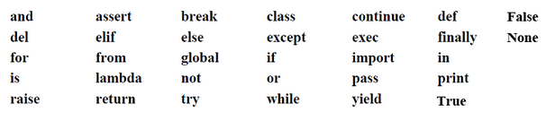
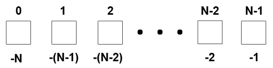

Python
Dimitri Dubois
Contenu
Introduction
- créé par Guido Van Rossum (Néerlandais)
- 1ère version date de 1991
- géré par la Python Software Fondation depuis 2001
- site web: https://www.python.org
- actuellement branche python 3
- nom vient de la troupe des "Monty Python" (troupe d'humoristes anglais)

- langage de haut niveau
- langage interprété
- dipose d'un ramasse-miettes (gestion automatique de la mémoire)
- multiplateforme
- permet de créer des scripts et des programmes complets
- de + en + utilisé pour l'analyse de données (data science, big data, machine learning ...)
- syntaxe simple, peu verbeuse
- fonctionnalités extensibles avec des packages
Environnement Python
- la console : interpréteur de code Python
- permet d'écrire et d'exécuter du code mais ne le conserve pas
- consoles évoluées: ipython, jupyter-notebook
- pour développement d'applications, utilisation d'un IDE (PyCharm par exemple)
Installation de Python
- anaconda : distribution Python
- permet d'utiliser Python sans l'installer sur le système d'exploitation
- propose de nombreuses fonctionnalités comme les environnements virtuels
- website : https://www.anaconda.com/
Règles d'écriture du code (PEP 8)
- pas d'accolades ni de point-virgule
- : et indentation pour définir les blocs d'instruction
- des underscores dans les noms de variables et fonctions
- # pour les commentaires sur une ligne
- """ pour les commentaires multilignes
The "Zen of Python", par Tim Peters
- Préférer le beau au laid
- l'explicite à l'implicite
- le simple au complexe
- le complexe au compliqué
- le déroulé à l'imbriqué
- l'aéré au compact
- la lisibilité compte
- les cas particuliers ne le sont jamais assez pour violer les règles, même s'il faut privilégier l'aspect pratique à la pureté
- ne jamais passer les erreurs sous silence, ou les faire taire explicitement
- face à l'ambiguité, ne pas se laisser tenter à deviner
- il doit y avoir une - et si possible une seule - façon évidente de procéder, même si cette façon n'est pas évidente à première vue, à moins d'être Néerlandais
- mieux vaut maintenant que jamais, même si jamais est souvent mieux qu'immédiatement
- si l'implémentation s'explique difficilement, c'est une mauvaise idée
- si l'implémentation s'explique facilement, c'est peut-être une bonne idée
- les espaces de nommage sont une sacrée bonne idée, utilisons les plus souvent!
Types intégrés (built-in types) et opérateurs de comparaison
Nombres, chaînes de caractères et booléens
- int: nombre entier
- float: nombre décimal
- str: chaîne de caractères
- bool: booléen
- None: rien
- type(variable) renvoie le type
- int(), float(), str(), bool() pour changer le type (si compatible)
Opérateurs de comparaison
- + - * / % (modulo) // (division entière) et ** (puissance)
- Comparaisons (valeur): <> <=>= == et !=
- Comparaison (référence): is et is not
- and et or pour comparaisons multiples
Création d'une variable
- typage dynamique
- affectation avec le signe = (
ma_variable = 10) - sensible à la casse (
ma_variable != ma_Variable) - ne pas utiliser les mots clés du langage comme nom de variable ou de fonction

L'objet Liste
- peut stocker des éléments de type différent (int, str, bool, float, etc.)
- éléments ordonnées
- premier index à 0
- la liste et les éléments de la liste peuvent être modifiés dynamiquement
- instanciation: list() ou [] pour une liste vide
ma_liste = [1, "coucou", True]pour une liste contenant déjà des éléments ma_liste[0]affiche le premier élément de la liste (ici 1)
ma_liste[1]affiche "coucou"
Tranches / slices
- possible de travailler sur des tranches de liste (slice)
- permet d'afficher tout ou partie de la liste
- renvoie une nouvelle liste
- syntaxe:
ma_liste[start: stop: step] ma_liste[start: stop]contient les éléments i tels que start <= i < stop
donc i va de start à stop-1- par défaut l'intervalle est de 1
- chacun des éléments du slicing est optionnel
ma_liste[:]renvoie une copie de la liste
ma_liste[:2]renvoie les 2 premiers éléments (index 0 et 1)
ma_liste[1:]renvoie de l'index 1 à la fin
ma_liste[::2]renvoie toute la liste mais par intervalles de 2
Index négatifs
- index négatifs pour partir de la fin
ma_liste[-1]renvoie le dernier élément - un intervalle négatif fait afficher dans l'ordre inverse
ma_liste[::-1]renvoie [True, "coucou", 1]
Méthodes génériques applicables l'objet liste
len(ma_liste): affiche la longueur de la liste (nombre d'éléments)del ma_liste[1]: supprime l'élément à l'index 1del ma_liste[:]vide la liste
Méthodes de l'objet liste
ma_liste.append(objet): ajoute l'objet à la fin de la listema_liste.insert(index, objet): insère l'objet à l'index passé en argumentma_liste.remove(objet): supprime la première occurence de l'objetma_liste.extend(autre_liste): ajoute les éléments de autre_liste à la listema_liste.index(objet): renvoie le numéro d'index de la première occurence de l'objetma_liste.pop(): renvoie le dernier élément de la liste et le supprimeelement in ma_liste: renvoie True si element est dans la liste et False sinon
Parcourir l'objet liste
Première méthode, par les valeurs
for e in ma_liste:
print(e)
e va successivement prendre chaque valeur de la liste
Seconde méthode : index et valeur avec enumerate
for i, e in enumerate(ma_liste):
print(i, e)
i prend successivement le numéro de l'index et e l'élément correspondant
Pratique
- créer un notebook
- pour chaque consigne ci-dessous mettre le code dans une nouvelle cellule
- créer une liste (pays, joueurs de foot, etc.)
- faire afficher la longueur de la liste
- faire afficher les deux derniers éléments de la liste
- ajouter un élément à la liste
- enlever le deuxième élément de la liste
- le remettre à sa place
- faire afficher chaque élément de la liste avec une boucle for
- faire afficher chaque élément de la liste et son index avec enumerate
La chaîne de caractères
- création:
ma_chaine = "le contenu" - est considérée comme une liste de caractères
- slices fonctionnent comme pour les listes:
ma_chaine[:2]donne "le"
Méthodes de la chaîne de caractères
- capitalize(), upper(), lower(), split(separateur), count(caractere) etc.
- ne modifient pas la chaîne initiale, renvoie une nouvelle chaîne
Formatage
- insérer des variables dans une chaîne de caractères
- faire précéder la chaîne de f et mettre les variables entre accolades
pour les float possibilité de spécifier le nombre de décimales
Pratique
- créer une chaîne de caractères et faire afficher les 2 premières et les 2 dernières lettres de la chaîne
prenom, nom, age = "jean", "dupont", 35.57895
faire afficher (avec print et en utilisant le formatage):"Je m'appelle Jean DUPONT, j'ai 35.58 ans."
L'objet tuple
- comme une liste sauf que non mutable
- création avec parenthèses:
mon_tuple = (1, "A", True) - création d'un tuple avec un seul élément:
mon_tuple = ("A",) - peut-être transformé en liste:
ma_liste = list(mon_tuple) - peut transformer une liste:
tuple(mon_liste) - plus sûr qu'une liste pour stocker des éléments qui ne doivent pas être modifiés
L'objet dictionnaire
objet qui stocke sous forme clé: valeur
Instanciation
mon_dict_1 = dict(prenom="Jean", nom="Dupont", age=35)
mon_dict_2 = {"prenom": "Jean", "nom": "Dupont", "age": 35}
La première méthode n'est possible que si toutes les clés sont des mots (sans espaces)
Ajout et suppression de paires
- pour ajouter un élément, mettre la clé entre crochets
mon_dict["ma_cle"] = valeur - si la clé existe déjà, la valeur est remplacée
- pour accéder à une valeur appellée par la clé
mon_dict[ma_cle]renvoie la valeur associée à "ma_cle" - KeyError si on essaie d'accéder à une clé qui n'existe pas
del mon_dict[ma_cle]pour supprimer la paire "ma_cle"
Les méthodes de l'objet dictionnaire
mon_dict.clear()vide le dictionnairemon_dict.get(ma_cle, "valeur à renvoyer sinon")renvoie "valeur à renvoyer sinon" si la clé n'existe pas (évite KeyError)
mon_dict.keys()renvoie la liste des clésmon_dict.values()renvoie la liste des valeursmon_dict.items()renvoie la liste des tuples (clé, valeur)
- pour tester l'existence d'une clé dans le dictionnaire
ma_cle in mon_dict.keys()renvoie True or False
Parcours du dictionnaire
for k in mon_dict.keys():
instructions avec k
for v in mon_dict.values():
instructions avec v
for k, v in mon_dict.items():
instructions avec k et/ou v
Pratique
- créer un dictionnaire avec en clé les lettres du mot "programmation" et en valeur le nombre
de fois que la lettre apparaît dans le mot
{'a': 2, 'g': 1, 'i': 1, 'm': 2, 'n': 1, 'o': 2, 'p': 1, 'r': 2, 't': 1}
aide: boucle for, fonction count - faire afficher "clé: valeur" du dictionnaire avec print et items()
- créer un dictionnaire avec comme clé les nombres de 1 à 10 et en valeur leur carré
{1: 1, 2: 4, 3: 9, 4: 16, 5: 25, 6: 36, 7: 49, 8: 64, 9: 81, 10: 100} - faire afficher "clé: valeur" du dictionnaire avec print et items()
Structure conditionnelle et boucles
if ... elif ... else
mon_nombre = 50
if nom_nombre < 100:
print("Le nombre est inférieur à 100")
elif mon_nombre > 100:
print("Le nombre est supérieur à 100")
else:
print("Le nombre est égal à 100")
- if ... else en une ligne
- renvoie le résultat du test donc peut être stocké dans une variable
Boucle for
for i in iterable:
print(i)
- une liste, un tuple ou un dictionnaire sont des itérables
- range(start, stop, step) crée un itérable qui va de start à stop-1 par intervalle de
step
for i in range(1, 11):
print(i)
i prendra successivement les valeurs de 1 à 10 - une boucle répétée 10 fois:
for i in range(10) - l'itérable de
rangepeut se transformer en liste, aveclist(range(10))qui donne[0, 1, ..., 9]
Boucle while
- tant que
- utilisée lorsque l'on ne connaît pas à l'avance le nombre de répétitions à faire
- attention à la boucle infinie
continuer = True
while continuer:
nombre_aleatoire = random.randint(1, 100)
print(nombre_aleatoire)
if nombre_aleatoire < 25:
continuer = False
L'instruction break
permet de stopper une boucle while
while True:
nombre_aleatoire = random.randint(1, 100)
print(nombre_aleatoire)
if nombre_aleatoire < 25:
break
ou une boucle for
for i in range(50):
nombre_aleatoire = random.randint(1, 100)
print(nombre_aleatoire)
if nombre_aleatoire < 25:
break
L'instruction continue
permet de sauter un ou plusieurs éléments dans une boucle
for i in range(51):
if i % 2 > 0:
continue
print(i)
Pratique
- créer une liste de 1 à 10 avec
range - faire afficher chaque élément de la liste au carré et le supprimer selon la méthode FIFO en utilisant une boucle while et la fonction pop
La list-comprehension
- création d'une liste à partir d'une autre liste
forme générale:[expression for value in iterable]
[i**2 for i in range(10)]donne[0, 1, 4, 9, 16, 25, 36, 49, 64, 81]
- possible d'ajouter une condition
[i**2 for i in range(10) if i%2 == 0]donne[0, 4, 16, 36, 64]
- et même plusieurs
[i**2 for i in range(10) if i > 2 and i%2 == 0]donne[16, 36, 64]
- possible de créer un dictionnaire
{i: i**2 for i in range(10)}donne
{0: 0, 1: 1, 2: 4, 3: 9, 4: 16, 5: 25, 6: 36, 7: 49, 8: 64, 9: 81}
- aussi avec conditions
{i: i**2 for i in range(10) if i > 2 and i%2 == 0}donne
{4: 16, 6: 36, 8: 64}
Pratique
- créer une liste de tuples: le nombre et son carré, pour tous les nombres multiples de 4
compris entre 0 et 100
[(0, 0), (4, 16), (8, 64), ..., (96, 9216), (100, 10000)]
- créer un dictionnaire avec en clé les lettres du mot "programmation" et en valeur le nombre de fois que la lettre apparaît dans le mot
Les fonctions
Utilité et syntaxe
- permet de regrouper plusieurs instructions dans un bloc nommé qui peut être appelé par la suite (et à plusieurs reprises)
- déclaration avec le mot clé
def - l'indentation qui suit la déclaration définit le bloc d'instructions
- peut nécessiter un ou plusieurs paramètres pour fonctionner
- peut renvoyer une valeur ou un objet avec l'instruction return
renvoie de None par défaut si pas de return - se documente avec des docstrings (triples guillemets)
help(fonction) affiche cette documentation
def agir(arguments):
"""La documentation de la fonction"""
instructions avec les arguments
return resultat
built-in functions (fonctions intégrées)
documentation de ces fonctions: https://docs.python.org/3/library/functions.html
Paramètres et arguments
- paramètres: noms spécifiés dans la signature de la fonction
- arguments: objets/valeurs passés lors de l'appel de la fonction
def power(le_nombre, quelle_puissance):
return le_nombre ** quelle_puissance
le_nombre et quelle_puissance sont les paramètres de la fonction
power(10, 3)
10 et 3 sont les arguments de la fonction
- paramètres facultatifs ont une valeur par défaut et sont
placés après les paramètres obligatoires dans la signature
de la fonction
def power(quel_nombre, quelle_puissance=2):
return le_nombre ** quelle_puissance
- la fonction peut être appelée avec un seul argument (celui obligatoire)
power(10)renvoie 100 - ou avec deux arguments
power(10, 3)renvoie 1000
si plusieurs arguments obligatoires ou facultatifs, soit les donner dans l'ordre, soit utiliser leur nom
Pratique
- écrire une fonction qui prend une liste de nombres en paramètre et qui renvoie la somme des éléments de la liste
- écrire une fonction qui prend une liste en paramètre et qui renvoie une nouvelle liste avec les éléments unique de la liste initiale
- écrire une fonction "get_passwd" qui prend en paramètre
obligatoire une chaîne de caractères et en paramètre facultatif
un nombre (par défaut 4). La signature de la fonction est:
get_passwd(le_mot, nb_lettres=4)
La fonction renvoie un mot de passe composé de: "!" + les nb_lettres premières lettres en majuscules + "_" + le nombre d'occurence de ces nb_lettres dans le mot + "=$"
get_passwd("universite")renvoie !UNIV_1121=$
get_passwd("universite", 5)renvoie !UNIVE_11212=$
- Aide
"".join(iterable de str)permet de concaténer les éléments d'une liste dans une chaîne de caractères avec "" en séparateur. Ainsi"".join(["1", "2", "3"])donne"123"map(str, liste_entiers)permet d'appliquer la fonction str à chaque élément de la listeliste_entiers. Ainsimap(str, [1, 2, 3])donne["1", "2", "3"]
Les exceptions
- erreurs durant l'exécution du programme
- viennent soit d'une erreur de logique soit d'une situation non anticipée
- les erreurs/exceptions sont "soulevées" (raised) par le code / l'interpréteur
- une exception stoppe l'execution du programme
Principales exceptions
| Exception | Origine |
|---|---|
| IndexError | index d'un itérable indexé (liste, tuple) est hors limite |
| KeyError | demande d'accès à une clé inexistante dans un dictionnaire |
| NameError | demande d'accès à une variable non existante |
| TypeError | l'argument envoyé à une fonction n'est pas du bon type |
| ValueError | la valeur de l'argument envoyé à une fonction est invalide |
| ZeroDivisionError | tentative de division par 0 |
| AttributeError | demandé d'accès à un attribut d'un objet qui n'existe pas |
| IOError | erreur lors de l'ouverture/fermeture d'un fichier |
Interception d'une exception
- try: ... except: ...
- on essaie une instruction et si elle lève une exception on agit
try:
instruction susceptible de lever une exception
except Exception:
instruction si cette exception est levée
Exemple :
try:
mon_dict["ma_cle"] += 1
except KeyError:
mon_dict["ma_cle"] = 1
Possible d'intercepter plusieurs exceptions à la suite
try:
instruction susceptible de lever une erreur
except TypeError:
print("Erreur de type")
except ValueError:
print("Erreur de valeur")
Pas obligé de séparer la gestion de l'erreur :
try:
instruction susceptible de lever une erreur
except (TypeError, ValueError) as e:
print(e)
instruction
Pratique
- déterminer les erreurs potentielles dans les fonctions créées précédemment
- fonction qui renvoie la somme de la liste : si l'argument n'est pas une liste, si un des éléments de la liste n'est pas un nombre
- fonction get_passwd : si l'argument n'est pas une liste, si un des éléments de la liste est lui même une liste ...
- identifier les erreurs possibles et proposer des solutions pour y répondre
Lecture / écriture dans un fichier
La fonction open
- permet d'ouvrir un fichier s'il existe
- ou de le créer s'il n'existe pas
- plusieurs mode d'ouverture: lecture "r" (defaut), écriture "w" ou ajout "a"
fichier = open("chemin", "mode")où chemin est le chemin absolu du fichier et mode est "r", "w" ou "a"fichier.close()pour fermer le fichier une fois terminé
fichier = open("chemin", "w"):
ecriture dans le fichier
fichier.close()
Utilisation de with pour éviter fichier.close()
with open("chemin", "w") as f:
ecriture dans le fichier f
Avec with, le fichier est fermé automatiquement dès la sortie du bloc d'instructions
Ecriture dans un fichier
write(contenu)- contenu est une chaîne de caractères
il faut ajouter des "\n" à la fin des lignes pour ajouter un retour à la ligne
writelines(contenu)- contenu est une liste de chaînes de caractères
Lecture d'un fichier
read()lit tout le contenu et le place dans une chaîne de caractères
with open(chemin, "r") as f:
contenu = f.read()
readline()lit la ligne courante et la place dans une chaîne de caractères
il faut donc faire une boucle pour lire tout le contenu
contenu = ""
with open("chemin", "r") as f:
while True:
line = fichier.readline()
if line == "":
break
contenu += line
readlines()lit tout le contenu et le place dans une liste de chaînes de caractères - une ligne = un élément de la liste
contenu = f.readlines()
contenu est une liste- pour un fichier lourd il faut préférer readline qui est moins consommateur de mémoire (traitement ligne par ligne)
Pratique
- écrire du texte dans un fichier
- ouvrir le fichier, le lire et afficher le contenu
Les modules
- fichiers contenant des objets et fonctions que l'on peut importer
- par exemple dans le built-in il y a les fonctions sum(), max() et min()
- mais il existe aussi le module math qui contient beaucoup d'autres
fonctions, objets et valeurs
import mathpermet d'importer le module math
from math import powpermet d'importer la fonction pow du module math
from math import pow, sqrtpermet d'importer les fonctions pow et sqrt
from math import pow
print(pow(10, 3))
- par convention les
importse placent en haut du fichier de code dir(math)affiche la liste des objets et fonctions proposés par le modulehelp(math)affiche la documentation du modulehelp(math.pow)affiche la documentation de la fonction pow
Principaux modules du built-in
| Nom | Utilité |
|---|---|
| os | interactions avec l'OS |
| sys | interactions avec l'interpréteur |
| datetime et time | objets et fonctions liés au temps |
| math | constantes et fonctions de base en maths |
| random | génération d'aléas (nombre, sélection etc.) |
| collections, copy, re ... | |
Création d'un module
- dans un fichier *.py - Un fichier avec du code est un module
- 1ère ligne, le shebang:
#! /usr/bin/env python3 - 2ème ligne, l'encodage:
# -*- coding: utf-8 -*- - Ensuite écrire le code (les classes, les fonctions etc.)
Module "executable"
c'est un module qui agit lorsque on l'exécute, c'est-à-dire lorsque
on le démarre avec un processus python
Le module doit contenir le code suivant
if __name__ == "__main__":
instructions
parce que lorsque le processus python démarre le module il lui donne le nom "__main__".
Pour executer le module
python fichier.py
input: la console affiche le texte et récupère la saisie
Pratique
- créer un fichier passwd.py
- placer la fonction get_passwd créée antérieurement
- rendre le script executable: ajout du
if __name__ == "__main__"
Pour aller plus loin ...
- *args et **kwargs dans les paramètres d'une fonction
- création d'une fonction avec lambda
- les générateurs
- les décorateurs
- sérialisation avec pickle
- ...